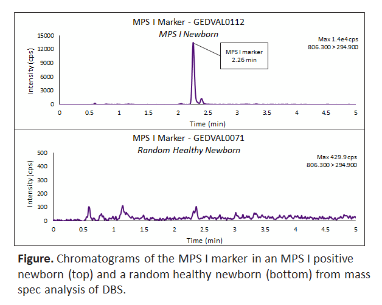
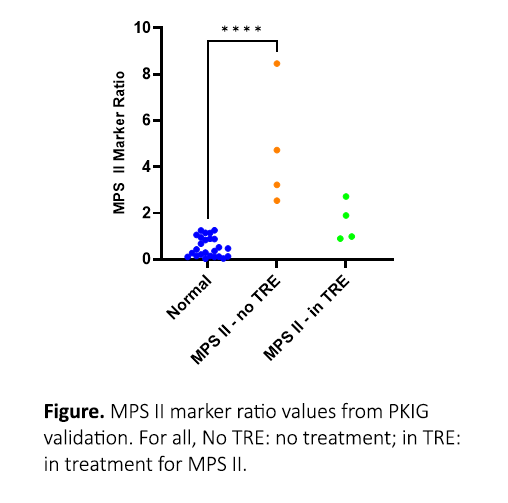
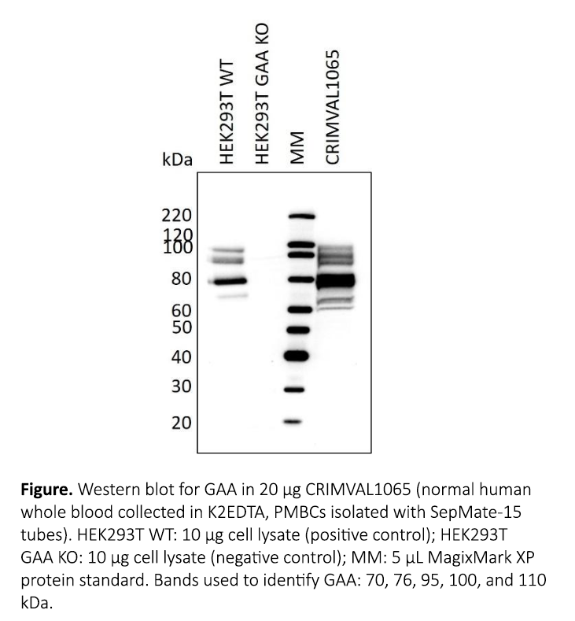
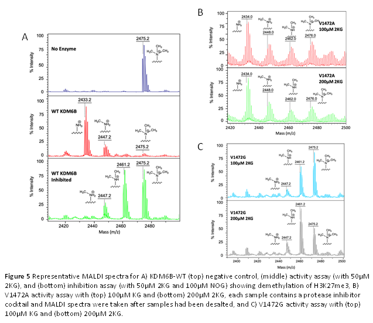
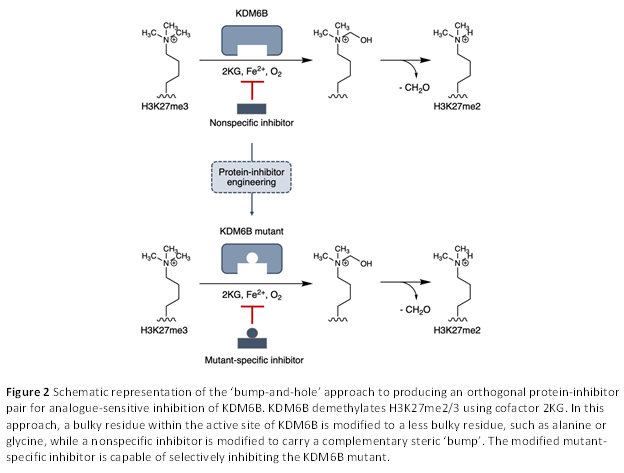
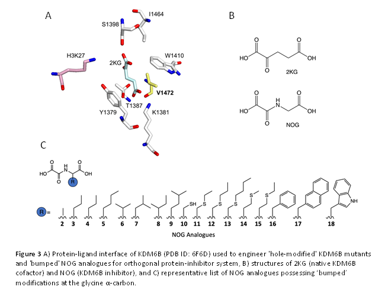

Fine-tuning genomic foundation models for protein abundance predictionUniversity of Calgary MSc Thesis Project
Protein abundance is shaped by a complex interaction between transcription,
post-transcriptional control, translation efficiency, and post-translational control.
These factors are difficult to learn from limited labeled data, since mRNA levels
alone are a weak proxy for protein output. This project fine-tunes a pretrained genomic
foundation model trained on large-scale regulatory genomics data as a foundation
for protein abundance prediction. Rather than training from scratch, it leverages
learned representations of DNA regulatory context to test whether
pretrained sequence-to-function models can generalize beyond their original
training tasks to a distinct molecular phenotype.
Genomic Foundation ModelsTransfer LearningProteomicsRegulatory Genomics
Diploid, patient-specific gene expression modellingUniversity of Calgary Research Project
Most genomic sequence-to-function models operate on haploid reference sequences. This
makes them poor predictors of real patient regulatory variation. They fail to capture
cis-epistasis: the non-additive compounding effect of multiple regulatory variants
interacting on the same haplotype. This is a limitation for models intended for clinical use.
This projects uses diploid, patient-specific genome sequences to predict personalized
gene expression coverage. It finetunes the trunk of a genomic foundation model and trains
a new prediction head. The project investigates how much of the model's improvement on
personalized data reflects genuine genotype-driven signal rather than simply learning a
new data distribution.
Genomic Foundation ModelsTransfer LearningDiploid ModellingPersonalized GenomicsGene Expression Prediction
VAE-based heritability estimation from genotype dataUniversity of Calgary Research Project
Standard heritability estimation methods, such as GCTA-GREML, rely on genetic
relationship matrices (GRMs) built directly from genotype data or from linear
dimensionality-reduction techniques like PCA, which may not fully capture nonlinear
structure in high-dimensional genomic data. This project explores variational
autoencoders (VAEs) as an alternative, nonlinear approach to genotype
dimensionality reduction, learning latent representations of genotype data across
multiple disease and cohort datasets. GRMs constructed from these VAE-derived
latent representations are used to estimate SNP-based heritability via a GREML
framework, with the goal of comparing this deep-learning-based approach against
conventional PCA-based heritability estimation.
Variational AutoencodersStatistical GeneticsHeritability EstimationGWAS Deep Learning


MPS I & IIPerkinElmer Genomics
At PerkinElmer Genomics, I developed semi-quantitative assays to detect the
presence of analytes (found to only be present in individuals with MPS I & II)
from dried blood spots using LC-MS/MS, which can be run simultaneously as a panel.
These markers are virtually undetectable within the normal population, yielding a
larger minimum differential factor and higher confidence in results compared to
traditional tests for MPS. In addition, the tests also allowed for differentiation
of pseudodeficient allele variants from pathogenic variants, reducing the number
of false positives commonly seen in MPS I testing.
We then began to investigate trends between variant types and MPS marker
concentrations, specifically for MPS I, as we believe it could prove clinically
useful in understanding variants of unknown significance, which currently yield
ambiguity in predicting clinical status.
Newborn ScreeningLC-MS/MSBiomarker DiscoveryLysosomal Storage DisordersAssay Development

Pompe CRIM-status determinationPerkinElmer Genomics
At PerkinElmer Genomics, I developed a qualitative assay to detect the presence of
endogenous acid α-glucosidase (GAA) within human peripheral blood mononuclear cells
(PBMCs) isolated from whole blood using Western blotting. The assay allows for rapid
CRIM-status determination in patients with Pompe disease in order to more quickly
initiate immune tolerance induction.
Newborn ScreeningWestern BlottingPompe DiseaseAssay Development



KDM6B 'bump-and-hole' researchUniversity of Pittsburgh Undergraduate Research
As an undergraduate at the University of Pittsburgh, I utilized the 'bump-and-hole'
method to develop variants of KDM6B with 'hole-modified' active sites which were
sensitive to selective inhibition by α-ketoglutarate engineered with complementary
steric 'bumps' to help elucidate KDM6B's specific epigenetic function.
Protein EngineeringEpigeneticsChemical BiologyEnzyme Design